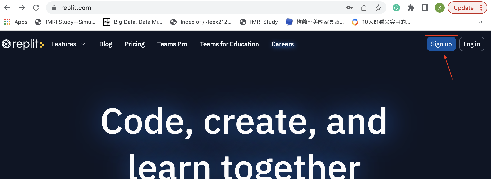
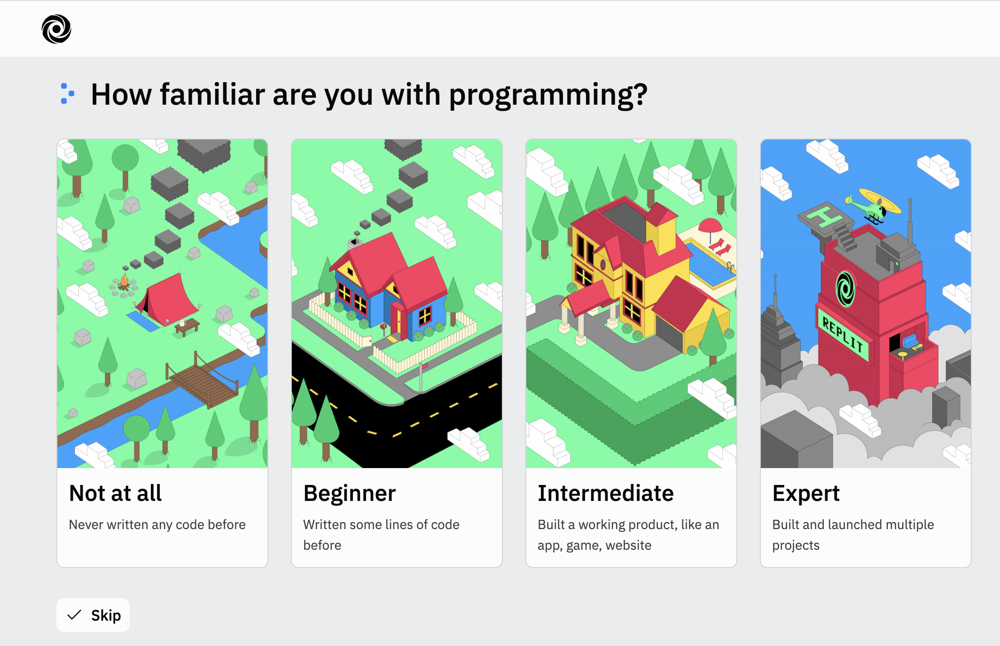

CLA 1: Create a replit account
Replit (rep·lit),is an online IDE (integrated development environment) that can be used with a variety of programming languages, including JavaScript, Python, C++, and so on. Replit's key feature is collaborative coding, the ability to share a Repl with one or many other users and see real-time edits across files, message each other, and debug code together.We are going to use replit as the coding tool for programming projects in CSCI-3080.
Objective:

Step 2: Please create an replit account with your MTSU email

Step 3: You can just click skip for the following two steps:


Step 4: You should see similar page like this after your account is created successfully

Step 5: Please join the replit team CSCI-3080-Fall-2023-002 using the following invitation link:
https://replit.com/teams/join/vrlsiseyhhdtrrodbeeqkghowgqbhmic-CSCI-3080-Fall-2023-002
Step 6: Click Teams in the lower left part of your replit page, you should see your team: CSCI-3080-Fall-2023-002.
Step 7: Click CSCI-3080-Fall-2023-002 team, you should see similar page in the following:

Congratulations! You have finished CLA1! Please go ahead to work on your Project1!